Home / Past papers / MLT Quiz 1 / this paper
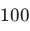
data-points and two clusters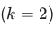
. As initialization, a subset of the dataset comprising the first fifty data-points, call this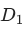
, are assigned to cluster and the remaining points, call this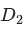
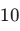
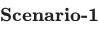
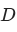
in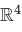
such that every data-point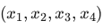
in satisfies the equation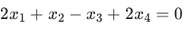
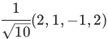
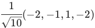
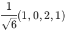
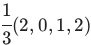
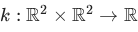
with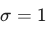
. Compute the value of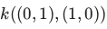
and enter your answer correct to two decimal places.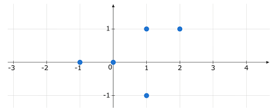
K-means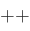
is used to initialize the three means. The first mean is chosen to be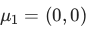
and the second mean to be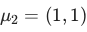
. Find the probability of choosing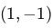
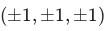
. These eight points make up a dataset . Based on the above data, answer the given subquestions.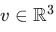
be some unit vector. Find the variance of the dataset along the direction .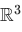
. The first three principal components are: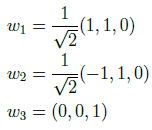
The first two principal components are retained and the third is discarded. The coordinate representation of the data-point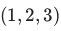
after projection onto the first two principal components is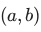
. Based on the above data, answer the given subquestions.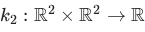
are valid kernels, then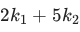
is also a valid kernel.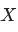
`A` is a data-matrix of shape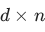
`A^T A`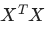
and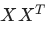
`A A^T` have the same eigenvectors.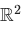
for a clustering problem with two clusters . The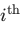
data-point is represented as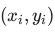
.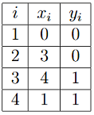
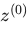
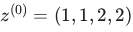
, which of the following is the final cluster assignment after running K-means on this dataset with this initial configuration?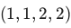
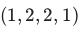
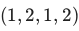
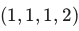
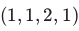
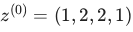
, which of the following is the final cluster assignment after running K-means on this dataset with this initial configuration?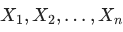
be i.i.d. observations from the mixture distribution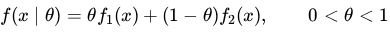
where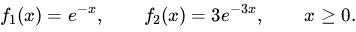
The observed data are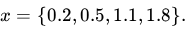
Assume that the initial estimate of the mixing parameter isAuto-generated summary from the source site. Handy as a checklist; the lessons above explain each idea from scratch.
Here’s a structured summary of core topics, concepts, principles, and equations essential for the "Diploma Level: Machine Learning Techniques" exam, followed by Mermaid knowledge graphs to visualize relationships.
K-Means Algorithm:
Key Observations:
Standard PCA Steps:
Key Properties:
Polynomial Kernel:
Gaussian (RBF) Kernel:
Kernel Properties:
Relationship Between and :
Principal Components:
Cube Properties:
| Topic | Equation |
|---|---|
| K-Means Update | |
| Covariance Matrix | |
| PCA Projection | , where are the top-k eigenvectors of . |
| Polynomial Kernel | |
| Gaussian Kernel | |
| GMM Log-Likelihood | |
| Posterior Responsibility | |
| Variance along |